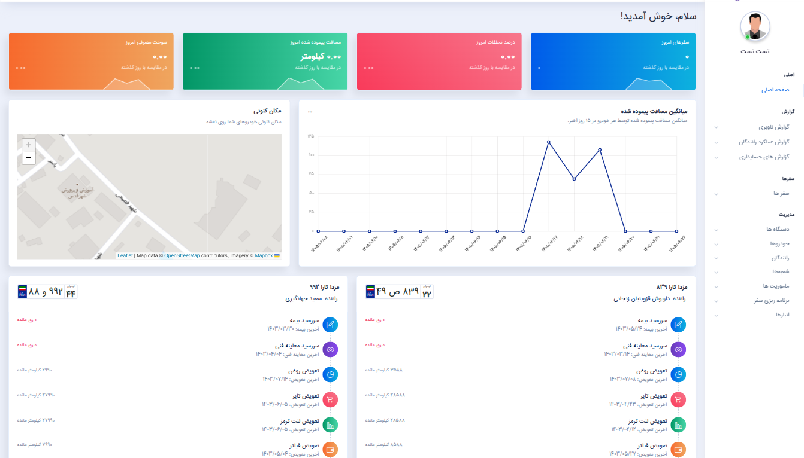
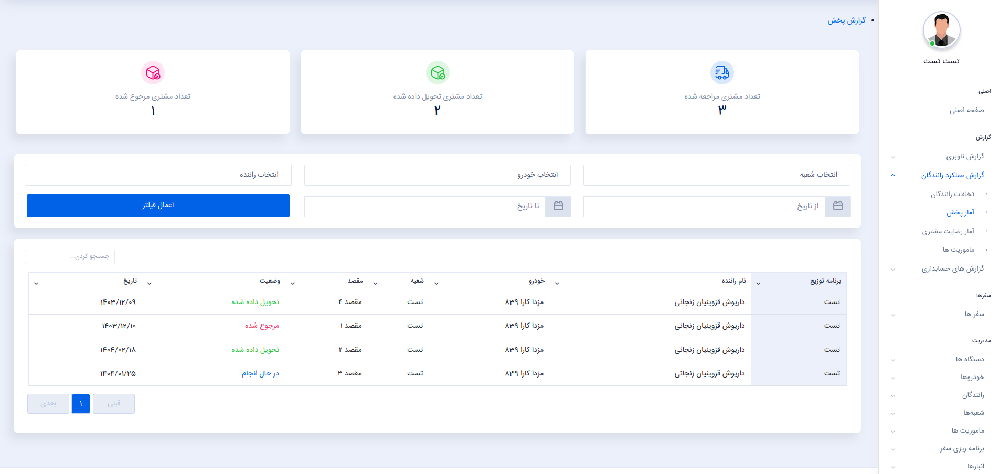
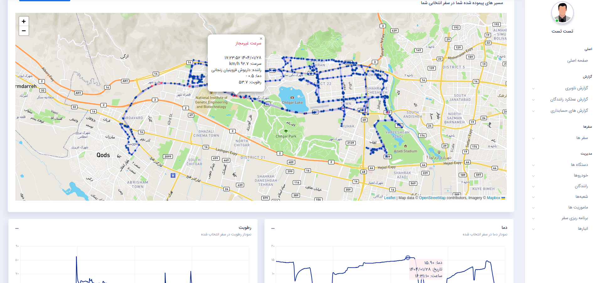

سامانه پایش و مدیریت حملونقل
سامانهای سازمانی برای مدیریت و پایش ناوگان حملونقل که امکان مدیریت وسایل نقلیه، دستگاههای ردیاب، رانندگان، مأموریتها، شعبهها و برنامههای پخش را فراهم میکند. اطلاعات خودروها به صورت لحظهای دریافت و در سامانه نمایش داده شده و امکان گزارشگیری از عملکرد ناوگان، مصرف سوخت و خطاهای حین رانندگی نیز در سیستم فراهم شده است.
مدیریت یکپارچه ناوگان و پایش لحظهای حملونقل
این پروژه یک سامانه سازمانی برای مدیریت و پایش ناوگان حملونقل است که فرآیندهای مرتبط با وسایل نقلیه، دستگاههای ردیاب، رانندگان، مأموریتها، شعبهها و برنامههای پخش را در یک سیستم یکپارچه مدیریت میکند.
در سامانه، سازمان میتواند وسایل نقلیه و دستگاههای ردیاب را ثبت و مدیریت کرده، رانندگان را به خودروها اختصاص دهد و مأموریتها و برنامههای پخش را برای ناوگان تعریف و پیگیری کند.
اطلاعات ارسالی از دستگاههای ردیاب به صورت لحظهای دریافت و در سامانه پردازش و نمایش داده میشوند. به این ترتیب وضعیت خودروها و مسیر حرکت آنها قابل رصد بوده و محدودههای جغرافیایی مشخصی نیز میتوان برای شعبهها تعریف و کنترل کرد.
علاوه بر پایش لحظهای، سامانه امکان تهیه گزارشهای مختلف از عملکرد ناوگان را فراهم میکند؛ از جمله گزارش پخش، میزان مصرف سوخت و خطاهای ثبتشده حین رانندگی. در صورت خروج خودرو از محدوده تعیینشده نیز امکان ثبت و پیگیری خطای مربوط به آن وجود دارد.
قابلیتهای اصلی سیستم
مدیریت ناوگان و وسایل نقلیه
ثبت و مدیریت وسایل نقلیه، دستگاههای ردیاب و اطلاعات مرتبط با ناوگان سازمان.
مدیریت رانندگان و مأموریتها
مدیریت رانندگان، تخصیص آنها به وسایل نقلیه و تعریف و پیگیری مأموریتهای حملونقل.
رصد لحظهای خودروها
دریافت اطلاعات از دستگاههای ردیاب و نمایش لحظهای وضعیت و موقعیت وسایل نقلیه در سامانه.
مدیریت شعبه و محدوده جغرافیایی
تعریف محدوده جغرافیایی برای شعبهها و کنترل تردد خودروها نسبت به محدودههای تعیینشده.
برنامهریزی و گزارش پخش
ایجاد و مدیریت برنامههای پخش و تهیه گزارش از وضعیت و عملکرد فرآیندهای پخش.
گزارشگیری و کنترل خطاها
تهیه گزارش مصرف سوخت و عملکرد ناوگان و ثبت خطاهای حین رانندگی و خروج از محدوده مجاز.
جریان پایش و مدیریت ناوگان
وسایل نقلیه و دستگاههای ردیاب در سامانه ثبت و اطلاعات مرتبط با هر خودرو مدیریت میشود.
رانندگان و مأموریتهای حملونقل تعریف شده و برنامههای پخش برای ناوگان مشخص میشوند.
اطلاعات ارسالی از دستگاههای ردیاب دریافت و دادههای مربوط به خودروها در سامانه ثبت و پردازش میشوند.
موقعیت و وضعیت خودروها به صورت لحظهای در سامانه نمایش داده شده و مسیر حرکت آنها قابل پیگیری است.
اطلاعات تردد و عملکرد ناوگان بررسی شده و گزارشهای پخش، مصرف سوخت و خطاهای ثبتشده ارائه میشوند.
تکنولوژی و ساختار فنی
سامانه با Django و Django Templates توسعه داده شده و منطق اصلی سیستم برای مدیریت ناوگان، وسایل نقلیه، رانندگان، مأموریتها و برنامههای پخش در سمت Backend پیادهسازی شده است.
دادههای ارسالی از دستگاههای ردیاب دریافت و در سامانه پردازش و مدیریت میشوند تا اطلاعات مربوط به موقعیت، وضعیت خودرو و رویدادهای ثبتشده در پنل مدیریتی نمایش داده شوند. همچنین منطق مربوط به محدودههای جغرافیایی، ثبت خطاها و گزارشگیری در سیستم پیادهسازی شده است.
نمایی از بخشهای پروژه
بخشی از رابط کاربری و پنلهای مدیریتی سامانه.


